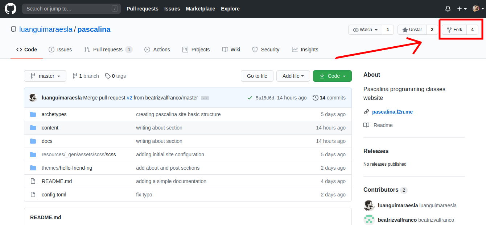
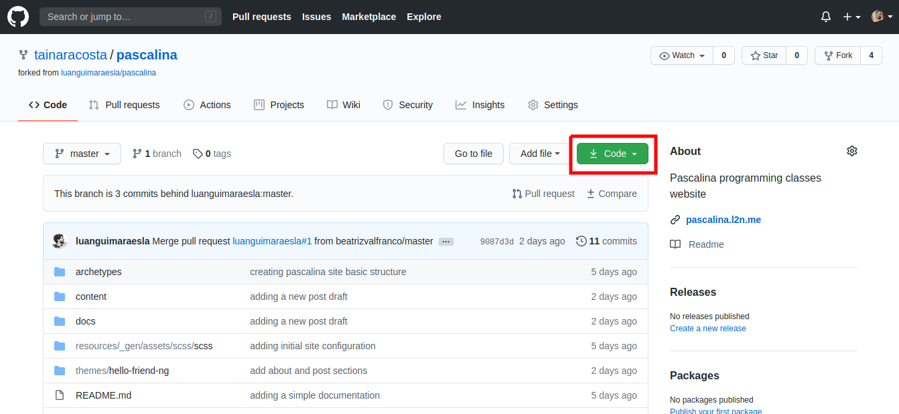
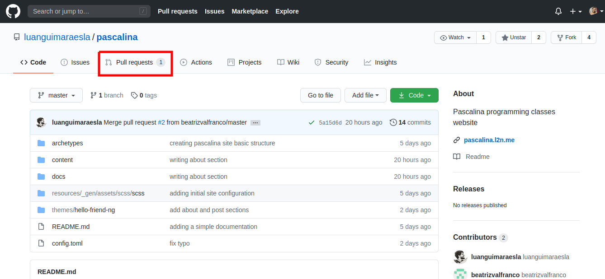
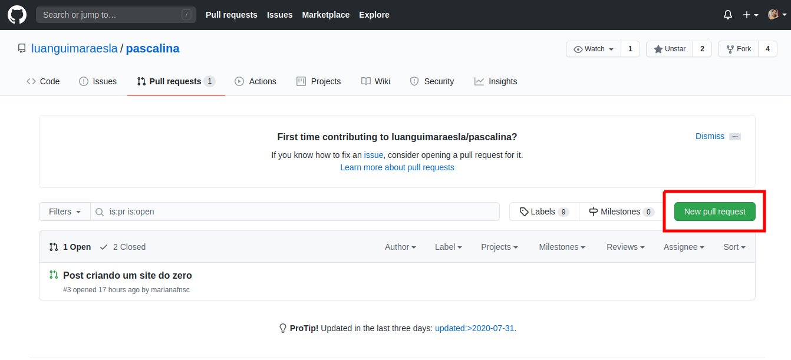
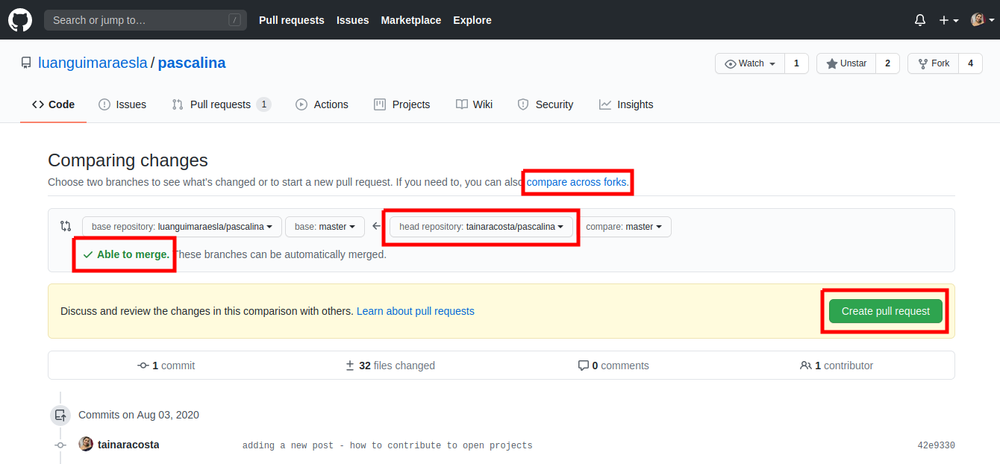
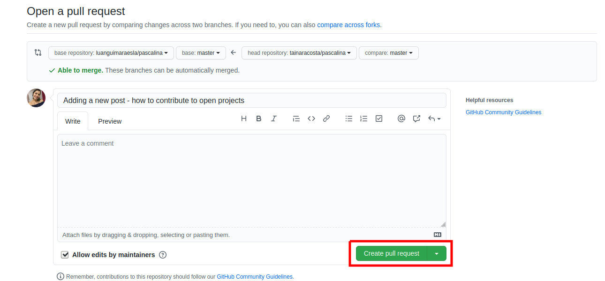

6 minutes
Como contribuir com projetos abertos
Para essa receita você vai precisar de: acesso à internet, uma conta no GitHub, ter o Git instalado no seu computador (saiba mais aqui), criatividade para colaborar com projetos e uma pitada de curiosidade.
Tá a fim de compartilhar conhecimento? Então vem!
Contribuir com um projeto aberto utilizando as ferramentas que vamos detalhar melhor nesse post, é tipo isso mesmo, uma receitinha de bolo.
Vamos adotar como exemplo para essa explicação, a forma como nos colaboramos para construção desse site, o Pascalina <3
Vale lembrar que o nosso site foi feito utilizando o Hugo, que é um gerador de sites estáticos, desenvolvido em Golang. É uma aplicação que auxilia o usuário a gerenciar, publicar e divulgar o seu conteúdo de uma maneira mais rápida e prática. Leia mais sobre o Hugo e a sua instalação (aqui).
-
Primeiro, você precisa criar uma conta no GitHub, uma plataforma de hospedagem de código-fonte com controle de versão usando o Git. Essa ferramenta possibilita que programadores, utilitários ou qualquer usuário cadastrado contribuam com projetos abertos ou privados de qualquer lugar do mundo (1).
-
Depois encontre o diretório do projeto dentro do GitHub. No nosso caso, o diretório do projeto pode ser acessado por esse link: https://github.com/luanguimaraesla/pascalina. Dê uma olhada e veja como é organizado um diretório, o site disponibiliza uma série de ferramentas para trabalharmos.
IMPORTANTE Antes de iniciar a sua contribuição, é uma boa prática procurar no repositório do projeto de interesse se existe alguma seção destinada à contribuições ou algum arquivo tipo CONTRIBUTE.md. A própria comunidade define os guidelines de contribuição e o que deve ser levado em consideração para realizá-la.
- Agora é necessário que você faça um Fork do repositório onde se encontra o projeto do seu interesse. Essa função permite a criação de uma cópia de um repositório, onde é possível experimentar livremente alterações sem afetar o projeto original (2).
Para isso, basta clicar no botão “Fork” localizado no canto superior direito, como mostra a imagem a seguir. Quando o Fork do repositório for concluído, você será redirecionado automaticamente para a cópia do repositório na sua conta do GitHub.

- Agora vamos iniciar o acesso para inserir nossas contribuições. No canto superior direito podemos encontrar o botão “Code”, como mostra a imagem. Ao clicar nele, será exibida uma caixa com um link URL, copie esse link.

- Abra o terminal do seu computador e altere o diretório de trabalho atual para o local em que deseja ter o diretório clonado. Depois execute o seguinte comando:
git clone [cole o link aqui]
# exemplo:
# git clone https://github.com/luanguimaraesla/pascalina
- Pronto! A pasta do repositório agora está salva no seu computador. Abra a mesma no seu editor de código para ter acesso as pastas e códigos do repositório que foi copiado. Lembrando que toda alteração feita nesse projeto não irá afetar o código original.
No nosso exemplo, estamos contribuindo para a publicação de um post no site Pascalina, mas você pode usar esse tutorial para realizar outros tipos de alterações.
Provavelmente, no seu editor de código você poderá navegar pelas pastas que estão na raiz do projeto e inserir suas modificações no código. Nesse caso, a criação de posts é feita acessando as pastas: content/posts. Dentro da pasta “Post” você criará um documento com a extensão .md e poderá escrever o texto que pretende publicar no site, para isso usamos uma linguagem específica no nosso projeto, chamada Markdown.
Markdown é uma linguagem simples de marcação, originalmente criada por John Gruber e Aaron Swartz, ela converte seu texto em HTML válido (3).
Leia um pouco mais sobre como usar essa linguagem no Markdown Guide (4).
- Quando você encerrar e salvar todas as contribuições que desejava fazer no código do projeto, é necessário enviá-las para o GitHub para que de fato elas sejam implementadas e a contribuição seja feita. Esse processo é realizado por meio do Git e precisaremos rodar alguns comandos no nosso terminal (certifique-se que o diretório atual seja o do projeto).
No caso específico de colaboração com o nosso site:
O primeiro comando dessa etapa é o hugo, mas vale ressaltar que em outros casos pode ser necessário rodar testes ou algo do tipo, dependendo da aplicação isso irá variar. Se a sua intenção é colaborar com outro projeto aberto, pule esse comando e vá direto para o git.
O comando hugo gera seu site no diretório público e assim está tudo pronto para ser implantado no seu servidor da web (5).
hugo
Em seguida, podemos observar todas as mudanças feitas e arquivos criados, com o comando:
git status
O resultado desse comando é uma série de mudanças implementadas por nós e pelo Hugo automaticamente. Para adicionar todas essas mudanças na área de stage, usamos o comando:
git add -A
Agora vamos salvar essas mudanças com o comando:
git commit -m “adding a new post - how to contribute to open source projects”
Entre as aspas você pode inserir qualquer comentário que te ajude a identificar esse commit caso seja necessário. É importante que as mensagens sejam curtas e significativas.
E para passar todas essas mudanças do repositório local, ou seja, do seu computador para o repositório remoto que é o GitHub, usamos o comando:
git push origin master
Assim, todas as mudanças que você realizou no projeto estão agora salvas no GitHub.
- Para que as contribuições sejam aceitas pelo autor do projeto o qual você está sugerindo mudanças, é preciso fazer um pedido para que ele as aceite. Esse pedido é feito por meio do pull request, para acessar essa função devemos voltar ao repositório origem do projeto e clicar na aba “Pull requests”, como mostra a imagem.

Dentro dessa aba você irá clicar no botão “New pull request”.

E então irá aparecer a página de Compare changes, uma forma do GitHub certificar que a inserção das suas mudanças não irá apresentar conflitos com o código de origem. Para fazer a comparação entre seu código e o código origem clique na opção “compare across forks” e mude o “head repository” para o seu repositório, essa opção vai estar disponível na lista quanto clicar no botão dessa ferramenta. Se tudo estiver ok, vai aparacer a seguinte mensagem “Able to merge” e assim você poderá clicar no botão “Create pull request”. Esse passo pode ser observado na imagem abaixo:

- Em seguida irá aparecer a página de Open a pull request, onde você pode enviar uma mensagem junto com as modificações explicando para o autor do projeto o objetivo e os detalhes da sua colaboração. Por fim, clique no botão “Create pull request”

E pronto! Sua colaboração foi enviada e estará disponível para o autor conferir e decidir se irá aceitá-la.
Agora, sabendo como enviar sua colaboração para um projeto open source, fique a vontade para colaborar com o Pascalina!
Referências
(1) GitHub. Disponível em: https://pt.wikipedia.org/wiki/GitHub
(2) Fork a repo. Disponível em: https://docs.github.com/en/github/getting-started-with-github/fork-a-repo
(3) Markdown. Disponível em: https://pt.wikipedia.org/wiki/Markdown
(4) Markdown guide. Disponível em: https://www.markdownguide.org/basic-syntax/
(5) Basic Usage – Hugo. Disponível em: https://gohugo.io/getting-started/usage/